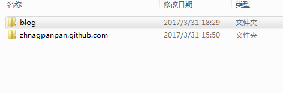
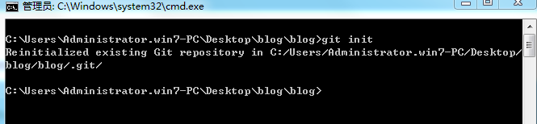
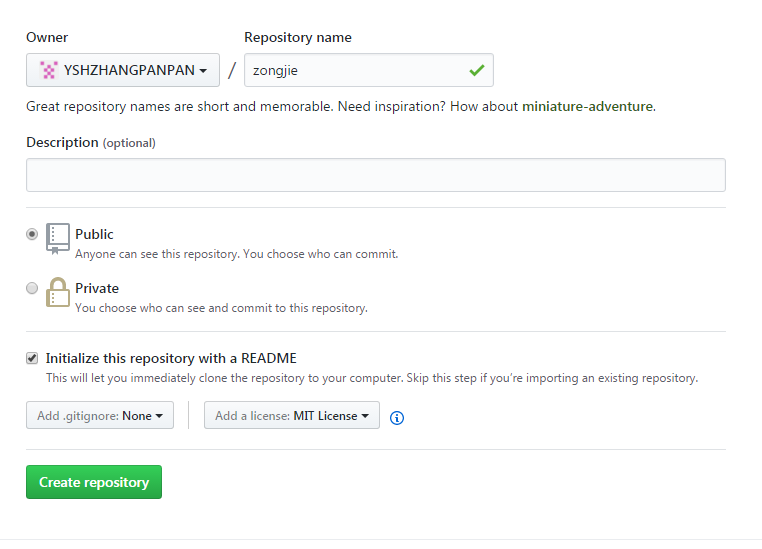
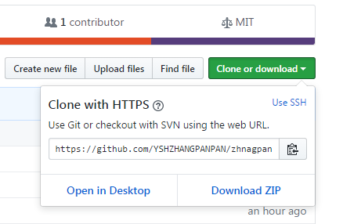
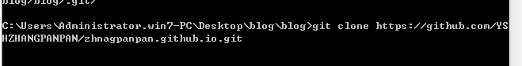

Git总结
一、备份本地文件/文件夹到云端
- 1、安装git 
- 2、创建项目文件夹
- 3、初始化git仓库：git init 
- 4、在云端创建项目所需文件 
- 5、git clone http开头的项目地址  
- 6、cd 所需上传文件
- 7、添加待提交文件：git add filename.filetype （git add . 是提交所有文件）
- 8、提交文件：git commit -m "提交描述"
- 9、git push origin master 将本地项目文件提交到服务器